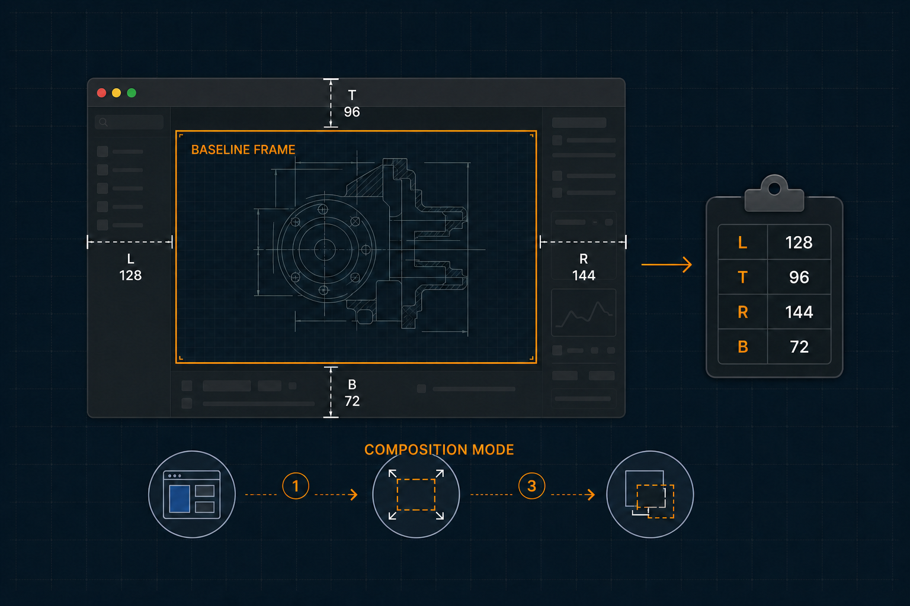

Plan: OBS Window Crop Guide

Purpose
Add Composition Mode as a new top-level Anodyne mode next to Window Mode. It snapshots the already-established frame of the focused window at its current size and aspect ratio, locks that exact frame as the recording guide, lets the user manually enlarge and reposition the same window underneath it, then calculates and copies the four crop values needed by an OBS macOS Window Capture source.
Problem
OBS can crop a captured window precisely, but finding the correct Left, Top, Right, and Bottom values by eye is slow and error-prone. The desired recording region is known at the start—the window frame that Anodyne has already sized—but the values are needed only after the window has been enlarged and shifted to expose the desired subsection. macOS coordinates may also be expressed in points while OBS consumes source pixels.
Solution
Introduce a tested Composition Mode state machine with a strict native boundary. ctrl+alt+cmd+C enters this top-level mode independently of Window Mode at ctrl+alt+cmd+M; Return finishes and copies the crops, while Esc cancels. Entering the mode freezes the current window frame without resizing it and the guide session remains active until one of those explicit exits. Pure Lua calculates crop values and formats outcomes; a dedicated controller owns the inactive/active transition; the existing Hammerspoon adapter owns mode resources, window discovery, screen scale, click-through canvases, pasteboard output, persistent Window-Mode-style status presentation, and retry-safe cleanup. Automatic scale detection uses screen:currentMode().scale, while 0 means auto and a positive configuration value overrides it.
Fixed Product Contracts
| ID | Contract | Failure behavior |
|---|---|---|
| COMPOSE-MODE-01 | Composition Mode is a top-level modal entered with configurable default ctrl+alt+cmd+C, parallel to Window Mode at ctrl+alt+cmd+M. Only one top-level mode may be active; entering the other cleanly exits or cancels the current mode. The active guide session has no automatic timeout; only the post-Finish result presentation uses the configured timeout. | Mode acquisition or cross-mode teardown failure leaves no half-entered replacement mode and reports concise visible status through Anodyne-owned presentation. |
| CROP-BASELINE-01 | Entering Composition Mode snapshots the selected window's exact current frame, including its arbitrary width, height, and aspect ratio; it never resizes or repositions that window. | No valid focused/remembered window means no session and a concise alert. |
| CROP-PIN-01 | The session remains pinned to the same window object and ID even when focus changes. | A missing or replaced target cancels the session and copies nothing. |
| CROP-MATH-01 | Crop values are integers in OBS order: Left, Top, Right, Bottom. Pixel conversion preserves the guide's rounded pixel width and height exactly. | If any guide edge lies outside the final window beyond tolerance, keep the session active, identify the invalid edge, and copy nothing. |
| CROP-SCALE-01 | Automatic scale is the start screen's finite positive currentMode().scale; a positive configured override wins. The chosen value is frozen for the session. | Invalid/missing scale or changed screen identity/full frame/scale cancels as stale geometry. |
| CROP-UI-01 | The guide is floating, click-through, fixed in absolute screen coordinates, and visible until Finish or Cancel. Its border width is configurable through immutable obsCrop.guideStrokeWidth and defaults to exactly 1 point. Later milestone dimming affects only the area outside the guide. | Canvas setup/teardown failures retain native handles for retry-safe adapter cleanup. |
| CROP-OUT-01 | While the guide is active, a click-through status modal matching Window Mode remains visible with the locked baseline and controls. Return removes the guide, copies one line, and changes that modal to the same crop values, result dimensions, and scale for obsCrop.resultDuration additional seconds. Esc cancels an active guide or dismisses the lingering result early; early dismissal never clears the clipboard. | Pasteboard failure leaves the guide session active and recoverable, with visible failure status in the persistent modal. |
| CROP-LIFE-01 | Reload/stop removes the Composition Mode entry hotkey, modal bindings, and every guide canvas with no stale callbacks or resources. | Cleanup aggregates failures and repeated :stop() retries retained resources, matching existing Anodyne lifecycle policy. |
Relevant Files
Existing Files
- existing
Anodyne/config.lua— add the validated Composition Mode entry hotkey, scale override, result duration, dim opacity, and guide stroke-width defaults. - existing
Anodyne/view.lua— format Composition Mode help/status, crop clipboard text, and the top-level mode's menu presentation. - existing
Anodyne/adapter/hammerspoon.lua— own the second top-level modal, its entry hotkey/bindings, cross-mode exclusion, guide/status canvases, result timer, screen mode access, pasteboard, callbacks, and teardown. - existing
spec/support/fake_hs.lua— extend the strict fake withcurrentMode, pasteboard, alert, and click-through canvas behavior. - existing
spec/adapter/hammerspoon_spec.luaandspec/characterization/anodyne_spec.lua— prove native acquisition, interaction, failure retention, and reload cleanup. - existing
tools/check_architecture.luaandtools/check_coverage.lua— recognize the new modules and enforce pure/controller coverage floors. - existing
README.md— document the manual OBS workflow and one-time scale sanity check.
New Files
- new
Anodyne/core/obs_crop.lua— pure validation, containment, point-to-pixel conversion, and crop calculation. - new
Anodyne/obs_crop_controller.lua— session state machine driven exclusively through injected ports. - new
spec/core/obs_crop_spec.lua— table-driven math and edge-case coverage. - new
spec/controller/obs_crop_controller_spec.lua— deterministic lifecycle, failure, and output-policy tests.
Implementation Milestones
IMPORTANT: Execute every milestone in order. Within Milestone 1, WP-01, WP-02, and WP-03 may run in parallel because their ownership sets do not overlap. All other packets are sequential dependency gates.
Status markers: [] idle · [wip] in progress · [x] complete · [f] failed. All start as []; the Build Plan workflow updates them as it works.
[x] Milestone 0: Baseline and Contract Freeze
The primary agent establishes a trustworthy baseline before delegating implementation. No worker packet starts against a failing baseline or an unexplained overlapping worktree.
Validation goal: establish a green, attributable baseline and lock the product contracts and non-overlapping ownership map before any worker edits production code.
0.1 Primary-agent preflight
[x]Record the starting SHA and inspectgit status --short; preserve all unrelated user changes and stop on overlapping changes.[x]Re-read this plan's fixed contracts and translate them into packet prompts verbatim; workers do not invent OBS integration, force an aspect ratio, or resize the window when Composition Mode begins.[x]Confirm the default Composition Mode entry bindingctrl+alt+cmd+Cis configurable and clearly parallel to Window Mode'sctrl+alt+cmd+M; bindReturnto Finish/Copy andEscto Cancel inside the mode.
0.2 Testing Strategy
Run the repository's complete offline gate unchanged. A red baseline is investigated before feature work so later failures remain attributable.
[x]make verify— proves the existing toolchain, formatting, suites, coverage, and architecture are green before edits.
[x] Milestone 1: Parallel Foundations
Three non-overlapping worker packets establish the domain math, user-facing configuration/text, and strict native-test seam. The primary agent dispatches them concurrently, waits for all three, reviews their diffs for scope, and runs the combined gate.
Validation goal: prove crop math, configuration/presentation, and the extended fake independently, then converge them without cross-packet edits or regressions.
WP-01 Pure crop math
[x]Owner: worker agent. Touch onlyAnodyne/core/obs_crop.luaandspec/core/obs_crop_spec.lua.[x]Validate rects and finite positive scale; accept a small documented point tolerance only for containment.[x]Convert using a pixel rectangle, not four independently rounded deltas: round source size, guide origin relative to the window, and guide size; derive Right/Bottom so result dimensions exactly equal the rounded guide dimensions.[x]Return structured success/error values with invalid edge names; perform no formatting and reference no native/window APIs.[x]Cover scale 1, scale 2, fractional coordinates, asymmetric crops, zero crop, tolerance clamping, invalid rects/scales, and each outside edge.
WP-02 Configuration and presentation contract
[x]Owner: worker agent. Touch onlyAnodyne/config.lua,Anodyne/view.lua,spec/core/config_spec.lua, andspec/controller/view_spec.lua.[x]Add an immutablecompositionHotkeydefault for mode entry plusobsCropdefaults forscaleOverride = 0, result duration, and dim alpha; validate ranges and hotkey structure.[x]Add deterministic Composition Mode help/status text and clipboard/result text in exact OBS order without performing native actions. The help must identifyReturnas Finish/Copy,Escas Cancel, and the locked baseline dimensions.[x]Preserve existing Window Mode menu item order; add one clearly separated top-level Composition Mode entry with its shortcut and update exact menu tests.
WP-03 Strict fake native seam
[x]Owner: worker agent. Touch onlyspec/support/fake_hs.lua.[x]Add screencurrentMode()with configurable scale,hs.pasteboard.setContents,hs.alert.show, and canvasmouseCallback(nil)state/lifecycle validation.[x]Add driver helpers to trigger a specific hotkey, inspect clipboard/alerts, mutate screen scale, and inspect canvas frames/elements without weakening strict namespaces.[x]Preserve fault injection for every newly fallible lifecycle operation needed by adapter tests.
1.4 Testing Strategy
Each worker runs its narrow suite. After integration, the primary agent reruns all affected suites together and rejects any packet that changed files outside its ownership set.
[x]make test-core— validates crop math and configuration.[x]make test-controller— validates new view output and unchanged controller-facing presentation.[x]make test-adapter— proves the extended fake remains compatible with the current adapter before native feature wiring.[x]make format-check— proves all packet output conforms before the convergence milestone.
[x] Milestone 2: Crop Session State Machine
The controller packet turns the pure contracts into a recoverable Enter/Finish/Cancel Composition Mode workflow while remaining independent of Hammerspoon.
Validation goal: prove every state transition is deterministic, never moves the target window, and copies nothing for invalid or stale geometry.
WP-04 Port-driven controller
[x]Owner: worker agent. Depends on WP-01 and WP-02. Touch onlyAnodyne/obs_crop_controller.luaandspec/controller/obs_crop_controller_spec.lua.[x]Model explicit inactive/active Composition Mode state containing the pinned window object and ID, arbitrary baseline guide frame, screen identity/full frame, chosen scale, and no native resource handles.[x]Enter selects the established window via a port, snapshots its authoritative frame unchanged, snapshots screen data, resolves override-or-auto scale, asks the adapter to render, and commits state only after successful rendering.[x]Finish validates generation, target identity, screen snapshot, scale stability, and containment; then formats/copies output, closes Composition Mode, clears state, and reports success.[x]Outside-edge or pasteboard failures leave Composition Mode active for correction/retry; stale window/screen state cancels because the geometry is no longer trustworthy.[x]Cancel, cross-mode switch, and target-destroyed paths close the guide exactly once and clear state only after successful native teardown.[x]Test port exceptions, false returns, stale-generation callbacks, repeated Enter/Finish/Cancel, arbitrary baseline ratios, target destruction, screen/scale changes, pasteboard failure, cross-mode switching, and teardown retry.
2.2 Testing Strategy
Use deterministic port doubles. Mutation-sensitive assertions must prove that the controller never copies on invalid geometry and never changes the target window.
[x]make test-controller— validates all state transitions and presentation outputs.[x]make test-core— revalidates the controller's crop dependency contract.[x]make architecture— proves the new controller contains no nativehsaccess and introduces no cycle.
[x] Milestone 3: Native Guide and Clipboard Integration
This is the first end-to-end feature milestone. It adds Composition Mode as a peer of Window Mode and deliberately renders only the border; exterior dimming remains disabled until the crop workflow itself passes native and offline gates.
Validation goal: complete the border-only Hammerspoon workflow end to end with click-through interaction, correct clipboard output, and retry-safe native resource cleanup.
WP-05 Hammerspoon adapter wiring
[x]Owner: worker agent. Depends on WP-03 and WP-04. TouchAnodyne/adapter/hammerspoon.lua,spec/adapter/hammerspoon_spec.lua, andspec/characterization/anodyne_spec.lua.[x]Instantiate the crop controller and inject only narrow ports for window/frame/screen reads, scale detection, guide render/close, pasteboard, alert, generation guard, and view formatting.[x]Createowner.compositionModewith its own configurable entry hotkey, bindReturnto Finish/Copy andEscto Cancel, guard callbacks by generation, and route the new top-level menu entry through the same mode lifecycle.[x]Enforce mutual exclusion betweenwindowModeandcompositionMode: entering either cleanly exits or cancels the other before acquisition, never leaving both event surfaces active.[x]Render a full-screen transparent canvas on the stored screen with an orange guide border in canvas-local coordinates; explicitly callmouseCallback(nil), set overlay level, and retain the canvas before every fallible setup call.[x]Add the Composition Mode entry hotkey, modal resource, bindings, and canvas to ordered cleanup; enforce hide-before-delete, retain failed handles, aggregate errors, and allow repeated stop retries.[x]Fan out window-destroyed events to history and crop controllers without changing focused-window behavior.[x]Update acquisition/resource-count assertions, startup rollback matrices, callback generation tests, menu expectations, and reload characterization.
3.2 Testing Strategy
The strict fake must reject wrong signatures and prove exact native ownership. A real-Hammerspoon spot check confirms click-through behavior and window pinning before visual dimming expands the canvas.
[x]make test-adapter— validates native ports, resources, failure retention, and cleanup retry.[x]make test-characterization— validates reload, resource counts, and unchanged established behavior.[x]make test-facade— validates partial-start rollback now includes crop resources.[x]Manual Hammerspoon check: enter Composition Mode with a deliberately non-16:9 baseline, click and resize the target through the guide, pressReturn, and verify the clipboard's result dimensions equal that arbitrary baseline.
WP-02A / WP-05A Owner-requested guide-width amendment
[x]WP-02A owner: configuration worker. Touch onlyAnodyne/config.luaandspec/core/config_spec.lua; add immutable finite positiveobsCrop.guideStrokeWidthwith default exactly1.[x]WP-05A owner: adapter worker after WP-02A. Source the canvas border width from immutable configuration and expose the controller's Composition Mode help on entry so the authoritative locked baseline dimensions are visible during native validation.[x]Repeat the non-16:9 native check and compare the clipboardResultdimensions to the baseline dimensions reported by Composition Mode itself at the reported scale.
[x] Milestone 3A: Persistent Composition Status and Result Modal
Replace Composition Mode's transient native alerts with an Anodyne-owned, click-through status modal that matches Window Mode's dark rounded presentation. This amendment is a dependency gate before exterior dimming.
Validation goal: keep authoritative help and recoverable failure status visible for the entire guide session, then retain the copied result for the configured additional duration without changing clipboard contents.
WP-05B Persistent status/result presentation
[x]Owner: the WP-05 adapter worker as a sequential follow-up. TouchAnodyne/adapter/hammerspoon.lua,spec/adapter/hammerspoon_spec.lua, andspec/characterization/anodyne_spec.lua; extend the strict fake only if a missing native lifecycle seam is proven.[x]Render a separate click-through Composition status canvas using the same dark rounded rectangle, Menlo text, spacing, and sizing policy as Window Mode; keep baseline/control help visible with no timeout while the guide is active.[x]Route containment, pasteboard, stale, and teardown status through the Composition canvas instead ofhs.alert.show, preserving recoverable active-session behavior.[x]After successfulReturn, close the guide, preserve the clipboard, replace help with the formatted result, and keep the native Composition modal/status canvas alive for exactlyobsCrop.resultDurationadditional seconds.[x]During the lingering-result phase,Escstops the result timer, closes the status canvas, exits the native modal, and leaves clipboard contents unchanged. Timer expiry performs the same UI teardown.[x]Entering either top-level mode during result linger cleanly tears down the old result resources before acquisition. Stop/reload owns the result timer and status canvas with hide-before-delete, retained-handle retry, failure aggregation, and stale-callback guards.
3A.2 Testing Strategy
[x]make test-adapter— proves persistent help, modal-local dismissal, exact timer duration, clipboard retention, cross-mode behavior, and retry-safe native ownership.[x]make test-characterizationandmake test-facade— prove reload/startup rollback and established Window Mode presentation remain unchanged.[x]Manual Hammerspoon check: confirm the Composition status modal visually matches Window Mode, remains for the guide session, changes to the copied result afterReturn, dismisses early withEsc, and does not clear the clipboard.
[] Milestone 4: Exterior Dimming
Add the requested crop preview only after the underlying interaction is stable. Dimming uses geometry already stored for the full-screen guide canvas and cannot affect crop calculation.
Validation goal: visually isolate the guide using an exact four-region mask while preserving a clear center, click-through behavior, and unchanged crop calculations.
WP-06 Four-region dim mask
[]Owner: the WP-05 worker as a sequential follow-up, preventing overlapping edits to the adapter and adapter specs.[]Add four translucent rectangle elements—top, bottom, left, and right—around the guide; keep the center entirely transparent and draw the guide border above the masks.[]Clamp local element dimensions to nonnegative values and support screens with negative absolute origins.[]Source opacity from immutable config and preserve explicit click-through behavior across the full canvas.[]Assert exact element frames/order for normal, negative-origin, edge-touching, and fractional guide coordinates.
4.2 Testing Strategy
Offline tests verify the mask partition; native validation verifies the visual and interaction properties that a strict fake cannot render.
[]make test-adapter— proves correct dim rectangles, border z-order, and canvas lifecycle.[]make test-characterization— proves no resource/regression drift.[]Manual Hammerspoon check: confirm only the exterior dims, the guide interior remains visually unchanged, and all clicks/drags pass through.[]Manual OBS check: confirm macOS Window Capture contains only the selected app window and does not include the Hammerspoon guide/mask.
[] Milestone 5: Tooling, Documentation, and End-to-End Proof
Close the feature with enforceable architecture/coverage expectations, user documentation, and a real OBS calibration at the owner's native EasyRes mode.
Validation goal: pass the complete repository gate and reproduce a correct manual OBS crop at the owner's native display mode, with scale override retained only as a documented fallback.
WP-07 Repository gates and documentation
[]Owner: worker agent after WP-06. Touchtools/check_architecture.lua,tools/check_coverage.lua, their specs if required, andREADME.md.[]Add the new production paths to architecture expectations; preserve the rule that only the Hammerspoon adapter accesses rawhs.[]Enforce at least 95% raw line coverage forAnodyne/core/obs_crop.luaand 90% forAnodyne/obs_crop_controller.lua, while retaining the overall 85% gate.[]Document Anodyne's two top-level modes side by side: Window Mode atctrl+alt+cmd+Mand Composition Mode atctrl+alt+cmd+C. DocumentReturnFinish/Copy,EscCancel, OBS Edit Transform field order, clipboard format, auto scale, override semantics, containment errors, and the fact that Composition Mode never resizes or changes the baseline aspect ratio.[]Document that any current window frame is a valid baseline. Present 16:9 only as an optional example: the owner may first use Window Mode's existing 16:9 preset, exit Window Mode, then enter Composition Mode.[]Document one-time calibration: at native EasyRes mode, confirm reported scale is1, enter copied crops in OBS, and verify the cropped source matches the arbitrary locked guide. If values are uniformly doubled/halved, use the explicit override and record the observation rather than adding IPC.
5.2 Testing Strategy
The primary agent integrates WP-07, runs the full gate, then performs the owner's real workflow and requests a final independent review. No completion claim is made from unit tests alone because OBS source-pixel behavior is an external boundary.
[]make verify— proves formatting, all offline suites, raw coverage floors, and architecture.[]hs -c 'local m=hs.screen.mainScreen():currentMode(); return tostring(m.w).."x"..tostring(m.h).." scale="..tostring(m.scale)'— records the native display mode when Hammerspoon IPC is already available; otherwise use the Hammerspoon Console without enabling new IPC.[]Manual OBS workflow — establish a window at any chosen size/aspect, enter Composition Mode, enlarge/reposition it, pressReturn, paste values into Edit Transform, and verify all four edges plus output dimensions. Repeat once with a different aspect ratio.[]Reload Hammerspoon with an active guide and confirm no stale mask, hotkey, clipboard callback, or old-generation action survives.
Global Validation Commands
Execute these from the repository root after all milestones:
[]make format-check— all Lua follows the pinned StyLua format.[]make test-core— crop math and configuration pass independently.[]make test-controller— crop state machine and text/menu models pass independently.[]make test-adapter— strict native signatures, hotkeys, canvas, clipboard, alerts, and cleanup pass.[]make test-characterization— existing Anodyne and reload contracts remain intact.[]make coverage— new per-file and overall raw coverage floors pass.[]make architecture— native access remains isolated and dependencies remain acyclic.[]make verify— final aggregate offline proof passes from a clean process.
[f], preserve evidence, and do not claim OBS calibration.Orchestration and Worker Packet Map
| Packet | Dependency | Exclusive ownership | Acceptance evidence |
|---|---|---|---|
| WP-01 | Milestone 0 | New pure crop module and core spec | make test-core; pure/no-native review |
| WP-02 | Milestone 0 | Config, view, and their existing specs | make test-core test-controller; exact strings/menu review |
| WP-03 | Milestone 0 | Strict fake Hammerspoon support only | make test-adapter; no namespace weakening |
| WP-04 | WP-01, WP-02 | New crop controller and controller spec | make test-controller architecture; transition-safety review |
| WP-05 | WP-03, WP-04 | Adapter and native integration specs | Adapter/characterization/facade suites; lifecycle review |
| WP-05B | WP-05 plus owner amendments | Same adapter/spec ownership, sequentially | Persistent modal/timer/clipboard tests; lifecycle and native visual review |
| WP-06 | WP-05B | Same adapter/spec ownership, sequentially | Mask geometry tests plus native visual check |
| WP-07 | WP-06 | Tooling gates and README | make verify; manual OBS calibration |
Implementation Notes
Baseline frame and mode boundary
The guide is not an aspect-ratio preset. Composition Mode copies the current window frame verbatim and freezes it in absolute screen coordinates; any positive width and height are valid. Window Mode remains the optional place to establish a preferred size or ratio before Composition Mode begins. Once Composition Mode is active, it never invokes a window move/resize action and does not expire on the Window Mode timer.
Pixel-preserving crop calculation
Derive the far-edge crops from rounded pixel rectangles so OBS receives internally consistent integers:
sourceW = round(finalWindow.w * scale)
sourceH = round(finalWindow.h * scale)
left = round((guide.x - finalWindow.x) * scale)
top = round((guide.y - finalWindow.y) * scale)
resultW = round(guide.w * scale)
resultH = round(guide.h * scale)
right = sourceW - left - resultW
bottom = sourceH - top - resultHThis guarantees sourceW - left - right == resultW and the equivalent height invariant. Validate point containment before conversion; clamp only within the documented tolerance.
Guide/mask geometry
The canvas frame is the stored screen's fullFrame(). Convert the absolute guide to canvas-local coordinates once. The dim mask comprises four non-overlapping rectangles around that local guide; the border is the final canvas element. Negative global screen origins therefore require no special rendering beyond the absolute-to-local subtraction.
Scale policy
obsCrop.scaleOverride == 0 selects screen:currentMode().scale; any finite positive override is used verbatim. Native EasyRes mode is expected to report scale 1, but the manual OBS comparison is authoritative. A mismatch leads to a documented override, not OBS IPC.
Non-goals
- Changing the established window size when a crop session begins.
- Forcing 16:9 or any other aspect ratio; presets remain an optional Window Mode preparation step.
- Live crop-number updates while the user resizes.
- Reading OBS source dimensions or scene state.
- Applying OBS filters/transforms, starting recordings, or automating OBS UI.
- Supporting a guide that spans displays or changes display scale during one session.
- Guaranteeing compatibility with legacy/deprecated OBS Window Capture; calibration targets current macOS Screen Capture in Window Capture mode.
Amendments
Initial plan created on 2026-07-20; subsequent amendments are recorded below.
2026-07-20T22:52:01+02:00 — Generalize the baseline and formalize Composition Mode
Replaced the accidental fixed-16:9 requirement with an arbitrary locked starting frame. Defined Composition Mode as a new top-level mode beside Window Mode, with configurable ctrl+alt+cmd+C entry, Return Finish/Copy, Esc Cancel, explicit cross-mode exclusion, no automatic timeout, revised worker/validation requirements, and 16:9 retained only as an optional Window Mode example.
2026-07-21 — Make the guide border configurable and exactly 1 point by default
Owner testing confirmed that the guide is click-through and that Finish displays and copies the crop result, but found the four-point border visually too heavy. Added obsCrop.guideStrokeWidth as an immutable finite positive setting with a default of exactly 1, required the adapter to source the border width from configuration, and added a focused native retest that compares the clipboard result with Composition Mode's authoritative locked baseline dimensions.
2026-07-21 — Replace transient alerts with a persistent Window-Mode-style Composition modal
Owner testing approved the 1-point click-through guide and exact crop output, then requested consistent Anodyne presentation. Added Milestone 3A before dimming: help and recoverable status remain visible in a click-through Window-Mode-style canvas for the whole guide session; after Finish the guide closes while the copied result remains for configurable obsCrop.resultDuration additional seconds; Esc dismisses that result early without clearing the clipboard.